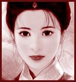
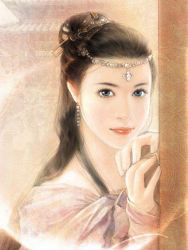

Récits Légendes de Kirin Tor Personnages Célébrités Guildes
Outils Calendrier Calendrier Illustré Mod d'interface
Informations Historiens FAQ Liens Crédits
Les légendes de Kirin Tor
Larmelune
==> Afficher les personnages de Larmelune
Larmelune
 Age : 23
Age : 23
Sexe : Femme
Race : Humain
Faction : Alliance
Formation : Voleur
Description : Un regard sombre et intense, un sourire en coin. C'est une belle brune à la peau ambrée, nonchalante et sensuelle à sa facon, brutale ou féline, piquante voir acide. Elle arbore une fausse allure de garcon manqué, restant entre dureté et taquinerie en toutes occasions, montrant rarement un peu de douceur et préferant les pantalons aux robes...pourtant elle ne manque pas de coquetteries, par touche discrète et toujours de mise impécable et vêtue de facon à mettre ses jolies formes en valeur.
Elle a son franc parlé, ce qui plait ou pas, ca passe ou ca casse... elle s'exprime souvent sans tact.. avec ses mots a elle, sans crainte du vulgaire, se conférant une allure de gamine des rues, en se moquant éperduement ce que l on pense d'elle.
Elle se déplace en silence, d une démarche sure et féminine, souvent en solitaire, sans prêter attention a ce qui l'entoure...du moins apparament.

Plus d'infos sur Larmelune >>>
Lire les 20 récits de Larmelune >>>
Tamara
Age : sans importanceSexe : Femme
Race : Humain
Faction : Alliance
Formation : Voleur
Plus d'infos sur Tamara >>>
Venessia
Age : 21 ansSexe : Femme
Race : Humain
Faction : Alliance
Formation : Démoniste
Description :
Qui je suis?
Je ne sais pas. Ceux qui m'ont donné la vie sont mort avant que je ne puisse le savoir, ou même savoir qui ils étaient.
Comment ai j'ai grandi?
Dans la solitude, sous l'egide d un père qui m'a confondue entre fille et servante, femme et maitresse, Complice ou esclave. Je n'ai sans doute pas a me plaindre, c est lui qui m'a façonné, lui qui m'a appris à parler, à penser, à marcher, lui qui m'a instruite, lui qui m'a transformé en poupée de verre dont l aspect prévalait sur tout. Il m'a appris le gout du luxe, le gout des artifices, ce Narcissisme qui m'habite souvent, comme un mauvais réflexe même si j'essaie de l'évincer.
Je n'ai pas à me plaindre, la nature fut a mon égard bien généreuse, et je veille a ce qu'elle le reste, la vie est plus simple pour une femme jolie.
Aujourd hui je suis libre, libre et seule, en haut d'une falaise, sur un nouveau départ. J'attend, j'espère, j'ai peur aussi de ce qui m'attend, mais je trouverais mon chemin, tôt ou tard.
Plus d'infos sur Venessia >>>
Lire le récit de Venessia >>>
Kinshara
Age : 25Sexe : Femme
Race : Humain
Faction : Alliance
Formation : Paladin
Plus d'infos sur Kinshara >>>
Keshindrae
 Sexe : Femme
Sexe : Femme
Race : Elfe
Faction : Alliance
Formation : Druide
Plus d'infos sur Keshindrae >>>
Lire les 4 récits de Keshindrae >>>
Evaneska
Age : 20Sexe : Femme
Race : Humain
Faction : Alliance
Formation : Prêtre
Description : Un troue Béant vers le néant...le regard dans le vide..
Le passé est une abime sans fin dont aucun échos ne raisone a son esprit. Elle ne sait rien, rien, a par que ses mains sont faites pour soigner.
Plus d'infos sur Evaneska >>>
Mildred
Age : 21Sexe : Femme
Race : Humain
Faction : Alliance
Formation : Prêtre
Plus d'infos sur Mildred >>>
==> Voir la galerie d'images de Larmelune